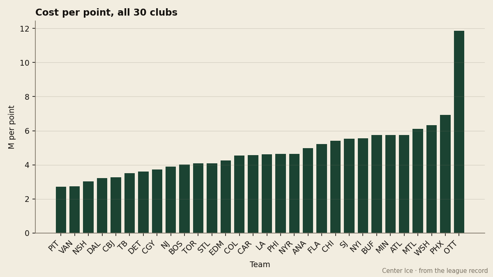
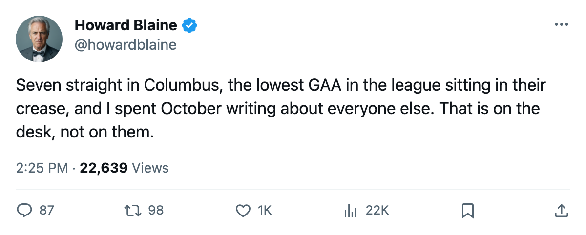
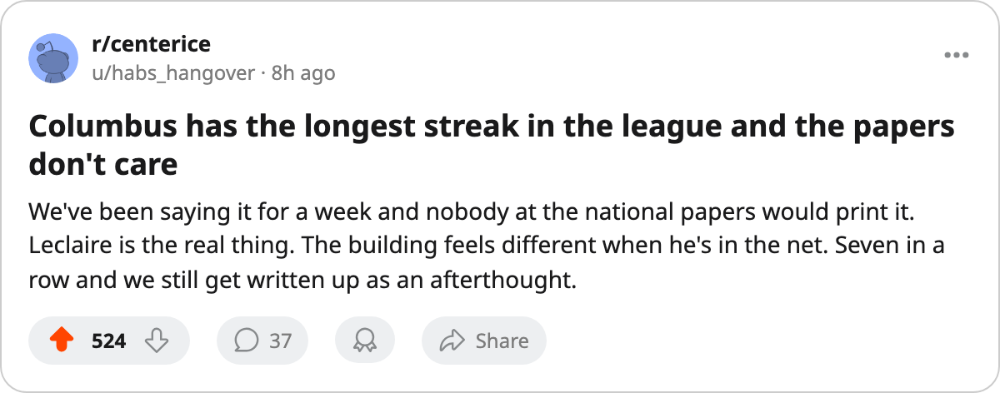

Seven Straight and Nobody Wrote About It: Columbus Leads the West Behind the League's Lowest GAA
Pascal Leclaire carries a 1.37 goals-against average, the Blue Jackets own the longest winning streak in hockey, and this paper devoted 8 stories in October to everyone else.
 Howard BlaineSenior writer, The Blaine Rankings · The Hockey Gazette
Howard BlaineSenior writer, The Blaine Rankings · The Hockey Gazette
The  Columbus Blue Jackets Blue Jackets lead the Western Conference with 19 points on 11 games, have won seven consecutive matches, and have conceded 20 goals in 11 outings, the fewest allowed by any club in the conference. Columbus sits one point ahead of
Columbus Blue Jackets Blue Jackets lead the Western Conference with 19 points on 11 games, have won seven consecutive matches, and have conceded 20 goals in 11 outings, the fewest allowed by any club in the conference. Columbus sits one point ahead of  Dallas Stars, two ahead of
Dallas Stars, two ahead of  Detroit Red Wings,
Detroit Red Wings,  St. Louis Blues,
St. Louis Blues,  Nashville Predators and
Nashville Predators and  Vancouver Canucks, all of whom hold 17, and the Blue Jackets have played two fewer games than Dallas and one fewer than Detroit and Vancouver. Through the first six weeks of the season, this paper wrote about Toronto, Pittsburgh, Buffalo, Nashville, Tampa Bay, Calgary, Colorado, New Jersey and Boston. Not once did it write about Columbus.
Vancouver Canucks, all of whom hold 17, and the Blue Jackets have played two fewer games than Dallas and one fewer than Detroit and Vancouver. Through the first six weeks of the season, this paper wrote about Toronto, Pittsburgh, Buffalo, Nashville, Tampa Bay, Calgary, Colorado, New Jersey and Boston. Not once did it write about Columbus.
The Blaine Rankings exist to catch that sort of gap. Early standings are close enough to final standings that a team atop the conference in November warrants the desk's attention, and right now the standings say Columbus is the best team in the West.
The goaltender doing the heavy lifting
 Pascal Leclaire91 has started seven games, won six, lost one, and carries a 1.37 goals-against average. Among all goaltenders in the league with five games played or more, no one else is lower. Mikael Tellqvist73 of
Pascal Leclaire91 has started seven games, won six, lost one, and carries a 1.37 goals-against average. Among all goaltenders in the league with five games played or more, no one else is lower. Mikael Tellqvist73 of  Toronto Maple Leafs sits at 1.48 on six starts.
Toronto Maple Leafs sits at 1.48 on six starts.  Roberto Luongo95 at 1.61 on five.
Roberto Luongo95 at 1.61 on five.  Marty Turco95 of Dallas Stars at 1.65 on ten.
Marty Turco95 of Dallas Stars at 1.65 on ten.  Martin Brodeur95 at 1.88 on eight. Leclaire's number beats all four, and he has played more games than Tellqvist or Luongo.
Martin Brodeur95 at 1.88 on eight. Leclaire's number beats all four, and he has played more games than Tellqvist or Luongo.
His save percentage is .931. The Bureau has him at an overall grade of 89, and the Development Index carries a form value of +9, both figures consistent with a young goaltender climbing toward an established starter's numbers. He is 22 years old. He was the eighth pick of the 2001 draft. Columbus has 0 Stanley Cups, 680 prestige points, and a franchise that finished 13th in the Western Conference last spring. Leclaire is the first genuinely good thing this club has owned at the most important position on the ice.
| Goaltender | Club | GP | W-L | GAA | SV% | Overall |
|---|---|---|---|---|---|---|
| Pascal Leclaire | CBJ | 7 | 6-1 | 1.37 | .931 | 89 |
| Mikael Tellqvist | TOR | 6 | 6-0 | 1.48 | .950 | 73 |
| Roberto Luongo | TOR | 5 | 4-1 | 1.61 | .944 | 97 |
| Marty Turco | DAL | 10 | 6-4 | 1.65 | .904 | 97 |
| Martin Brodeur | NJ | 8 | 7-1 | 1.88 | .909 | 92 |
Seven wins in a row and one loss at home
The streak of 7 is the longest in the league. Toronto Maple Leafs and  New Jersey Devils are next at 6, then
New Jersey Devils are next at 6, then  Pittsburgh Penguins at 4. Columbus built the streak on a 7-1 home record, a mark that trails only Toronto's 8-2 in home wins and matches the best home winning percentage in hockey. The single home loss came in the 9th home game.
Pittsburgh Penguins at 4. Columbus built the streak on a 7-1 home record, a mark that trails only Toronto's 8-2 in home wins and matches the best home winning percentage in hockey. The single home loss came in the 9th home game.
The identity underneath the streak is defensive. Columbus has scored 28 goals in 11 games and allowed 20, a goal differential of +8 that leads the Western Conference. Dallas sits at +5, Nashville at +5, St. Louis and Detroit and Vancouver at +4. The Blue Jackets have not outscored many teams; they keep opponents from scoring enough to matter, which is Pascal Leclaire's doing.
What the payroll says and what the standings say
Columbus carries a $62.03M payroll, the seventh highest in the league, and has converted it into the fifth-best cost-per-point rate in hockey at $3.26M per point. Pittsburgh Penguins lead the league at $2.72M, Vancouver Canucks sit at $2.73M, Nashville Predators at $3.02M, and Dallas Stars at $3.22M. Columbus sits behind those four, ahead of  Tampa Bay Lightning at $3.52M and every other club in the conference.
Tampa Bay Lightning at $3.52M and every other club in the conference.

Revenue at $40.57M per game-day places Columbus ninth in the league. Profit at $24.65M places it third, behind only Toronto Maple Leafs at $37.06M and Detroit Red Wings at $30.06M. The building is filling to 14,847 seats a night at an $83 ticket. A club drawing that kind of crowd at that kind of margin has a revenue base to build on, and the $62.03M payroll leaves room to add a top-six forward or a second-pairing defenseman without breaching any structural ceiling. The gap between where Columbus is spending and where it stands in the West is the number that should worry the rest of the conference.
The games in hand, and what November tells you
Columbus has 71 games remaining, more than Toronto Maple Leafs and New Jersey Devils and Pittsburgh Penguins, who have 69, 73 and 71 respectively. The Blue Jackets have played 11 games against 9 games for New Jersey and 11 against 13 for Dallas and 11 against 12 for Detroit. At some point those game-count differences resolve, and Columbus's point total will converge toward the clubs that have played more. But a goal differential of +8 and a goaltender with a 1.37 GAA are results, not scheduling artifacts.
The week ahead sends Columbus to  San Jose Sharks on November 7, home against
San Jose Sharks on November 7, home against  New York Rangers on November 9, and to
New York Rangers on November 9, and to  Colorado Avalanche on November 12. San Jose is 4-3-2. New York is 6-3-2 on a two-game win streak of its own. Colorado is 4-3-3 with a league-scoring lead sitting in its locker room. Each is above .500, and what happens next is up to these three opponents, not this desk.
Colorado Avalanche on November 12. San Jose is 4-3-2. New York is 6-3-2 on a two-game win streak of its own. Colorado is 4-3-3 with a league-scoring lead sitting in its locker room. Each is above .500, and what happens next is up to these three opponents, not this desk.
Columbus has a 22-year-old goaltender, a building that produces wins at a rate no other club matches, and the longest active streak in the league. It does not have a 164-point-pace scorer like  Markus Naslund87 in Vancouver, a $92.95M payroll like New York Rangers in New York, or a banner in its rafters like Toronto Maple Leafs. Those three things are worth 19 points in 11 games, and 19 points in 11 games leads the Western Conference.
Markus Naslund87 in Vancouver, a $92.95M payroll like New York Rangers in New York, or a banner in its rafters like Toronto Maple Leafs. Those three things are worth 19 points in 11 games, and 19 points in 11 games leads the Western Conference.

